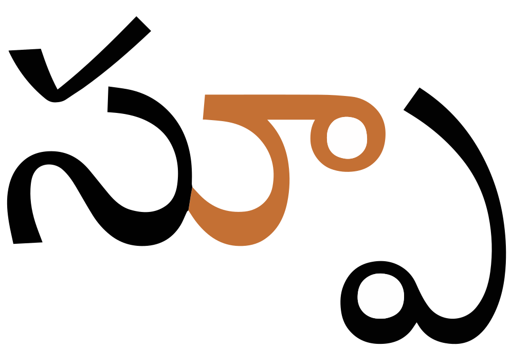
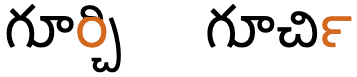
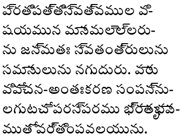

This page brings together basic information about the Telugu script and its use for the Telugu language. It aims to provide a brief, descriptive summary of the modern, printed orthography and typographic features, and to advise how to write Telugu using Unicode.
The Telugu script is used for writing the Telugu language, a Dravidian language spoken by almost 70,000,000 people in South India, and the official language of the Indian state of Andhra Pradesh. It is also used for a number of minority languages, and other neighbouring Indian states.
తెలుగు లిపి (telugu lipi) Telugu script
This script and Kannada (which is similar enough for people who can read one to be able to read the other) both developed together from the Brahmi script, but diverged around the 13th century. From then until recently, Telugu was a literary language, reflecting an archaic spoken form, but it was altered to support modern communication in the second half of the 20th century.
The Telugu script is an abugida. Consonants carry an inherent vowel which can be modified by appending vowel signs to the consonant. See the table to the right for a brief overview of features for the modern Telugu orthography.
The script is visually different from scripts like Devanagari and Bengali due to the rounded bases of the letters, which sit on rather hanging from a baseline. It also differs in the replacement of the flat, joining headstroke with a hook above the top of many characters. The hook is removed to accommodate superscript vowel signs and the virama.
Telugu text runs left-to-right in horizontal lines. Words are separated by spaces.
Consonant clusters at any location are normally indicated using the virama between consonants. This results in a large number of conjunct forms expressed using half-forms, stacked consonants, and ligated glyphs. Occasionally, a visible virama is used.
Conjuncts are fairly regular and nearly always consist of a full-form initial consonant followed by a subjoined version of the second. The subjoined version loses the hook, and in about 50% of cases is transformed. Many subjoined forms rise above the baseline to the right of the initial consonant, but any vowel signs attached to the cluster appear above or to the right of the initial consonant (which may be between the two consonant glyphs in the latter case). Some conjuncts are formed from conjoined pairs where the second letter is reduced and extends below the baseline. Gemination is quite common.
As part of a cluster, RA is formed in the same way as other conjuct members in the modern orthography, however historically there was a special behaviour.
Syllable-final consonant sounds may be represented by 2 dedicated combining marks (anusvara & visarga), but are generally ordinary consonants that are not marked by a virama.
The Telugu orthography is an abugida with one inherent vowel. Other post-consonant vowels are written using 11 vowel signs , all combining marks, and only one per base.
There are no pre-base glyphs but there is 1 circumgraph. In principle, there are no multipart vowels, however the circumgraph can be decomposed into 2 parts, displayed on different sides of the base.
Most vowel signs interact typographically with their base consonant, replacing the check mark above the base. A few also produce slightly different joined shapes.
Telugu has native number digits but doesn't often use them in modern texts. Until the adoption of the metric system, Telugu used a complicated system for writing fractions, with dedicated symbols that were combined in various ways.
Click on the sounds to reveal locations in this document where they are mentioned.
Phones in a lighter colour are non-native or allophones. Source Wikipedia.
Vowel sounds
Plain vowels.
o cannot appear at the end of a word.wl,#Phonology
æː occurs in loan wordswl,#Phonology, but may also occur before a syllable with the sounds a, o, or u, and in some verbal forms.d,417
Diphthongs
Consonant sounds
labial
dental
alveolar
post-
alveolar
retroflex
palatal
velar
glottal
stops
pb
td
ʈɖ
cɟ
kɡ
ʔ
aspirated
pʰbʰ
tʰdʰ
ʈʰɖʰ
kʰɡʰ
affricates
t͡sd͡z
t͡ʃd͡ʒ
aspirated
t͡ʃʰd͡ʒʰ
fricatives
f
s
ʃ ɕ
ʂ
h
nasals
m
n
ɳ
ɲ
ŋ
approximants
ʋ
l
ɭ
j
trills/flaps
ɾ
Aspirated or breathy consonants were introduced by and are mostly used by loan words, particularly from Sanskrit. The same goes for fricatives other than s.wl,#Phonology
ɲ and ŋ are associated with Sanskrit, and are relatively rare in Telugu.d,416
Structure
The typical unit of the orthography is the orthographic syllable, consisting of a consonant and vowel (CV) core and, optionally, one or more preceding consonants. Consonant letters by themselves constitute a CV unit, where the V is an inherent vowel. A dependent vowel sign is used to represent the V in CV units where V is not the inherent vowel.
In some cases, diacritics can be used to represent a syllable-final nasal.
Telugu words almost always end in short vowels, although modern Telugu allows m, n, y, and w to end a word, and loan words sometimes end with long vowels.wl,#Phonology
Geminate consonants are also a common feature of Telugu, mostly in word-medial positions, and are distinctive,wl,#Phonology eg. compare గదిగద్ది
Unlike some other Dravidian languages, voiced sounds were always part of the Telugu language.wl,#Phonology
Retroflex consonants appear initially (apart from ɳ and ɭ), and medially, where they may be part of a retroflex cluster.wl,#Phonology
j occurs in word-initial position only in borrowed words, such as jɐnɡuyoung.wl,#Phonology
Vowels
Vowel summary table
The following table summarises the main vowel to character assigments.
ⓘ represents the inherent vowel. Dependent vowels appear on the left, standalone vowels to the right.
a following a consonant is not written, but is seen as an inherent part of the consonant letter.
Combining marks used for vowels
కి
kiU+0C15 TELUGU LETTER KA + U+0C3F TELUGU VOWEL SIGN I
Telugu uses the following dedicated combining marks for vowels. They may be used on their own, or in combination with others (see circumgraphs).
ి␣ీ␣ు␣ూ␣ె␣ే␣ొ␣ో␣ా␣ ␣ై␣ౌ
Two vowel signs are spacing marks, meaning that they consume horizontal space when added to a base consonant.
When a vowel is pronounced after a conjunct, the vowel sign is attached to the first consonant in the cluster, even where the vowel sign pushes the two consonant glyphs apart (see fig_vowel_position).

In the sequence స్పిs͓pi the i (coloured) appears above the s, and in స్పూs͓pū the u (coloured) appears to the right of the s (not the p!).
The text is still entered following the spoken order: it is incorrect to type the vowel sign after the first consonant. (Click on the image in fig_vowel_position to see the multipart code points, arranged in order of storage.)
Standalone vowels
Telugu represents standalone vowels using a set of independent vowel letters. The set includes a character to represent the inherent vowel sound.
ఇ␣ఈ␣ఉ␣ఊ␣ఎ␣ఏ␣ఒ␣ఓ␣అ␣ఆ␣ ␣ఐ␣ఔ
Circumgraph
ై
One vowel is produced by a single combining character with visually separate parts, that appears on opposite sides of the consonant onset eg. కై.
Encoding. The circumgraph can be written as a single character, or as two.
The single code point per vowel sign is the form preferred by the Unicode Standard and the form in common use for Telugu. The parts are separated, however, in Unicode when normalised using Normalisation Form D (NFD).
Whichever approach is used, the vowel signs must be typed and stored after the consonant characters they surround. In the case of decomposed vowel signs, the order is also important and must be as shown above.
Vowel length
Differences in vowel length are indicated by the choice of vowel sign.
Nasalisation
tbd
Vowel sign placement
The following list shows where vowel signs are positioned around a base consonant to produce vowels for precomposed text, and how many instances of that pattern there are. The figure after the + sign represents combinations of Unicode characters,
2 post-base, eg. కుku
8 superscript, eg. కిki
1 super+subscript. eg. కైkaʲ
At maximum, vowel components can occur concurrently on 2 sides of the base.
Vowel absence
In traditional Telugu there is always a vowel sound at the end of a word, however in the modern language it is possible for m, n, y, and w to end a word.wl,#Phonology
There doesn't appear to be a method of extending the repertoire to cover non-native sounds (other than those used for Sanskrit), such as using a nukta or similar approach.
Onsets
Clusters of consonant letters at the beginning of an orthographic syllable occur in Telugu, and they are handled as described in the section clusters.
Finals
There are several ways of representing syllable-final nasals.
Nasals can be written using ం [U+0C02 TELUGU SIGN ANUSVARA]. Before a plosive this is pronounced as a homorganic nasal, eg. అంగము It is pronounced m when followed by a non-plosive consonant, or at the end of a word,d,415 eg. సింహలగాం
Syllable final h (usually pronounced ha) can be written with ః [U+0C03 TELUGU SIGN VISARGA], which is principally used for Sanskrit words, eg. పునః
The Unicode Standard describes a final n sound that is represented by న్ [U+0C28 TELUGU LETTER NA + U+0C4D TELUGU SIGN VIRAMA], but there is an older shape called nakāra pollu which can be produced, if the font supports it. The difference is only font based. To prevent the virama joining the final n with an immediately following consonant, use U+200C ZERO WIDTH NON-JOINER after the virama.u,500
Consonant clusters
The absence of a vowel sound between two or more consonants is visually indicated by using conjunct forms, where the second consonant is a subscript. There are some variant behaviours here:
Simple stacking : A reduced-size version of the 2nd consonant has any headstroke removed and is simply positioned below the 1st.
Conjoined with reduced forms : The shape of the 2nd consonant is transformed into something that sits alongside the 1st, but extends above and below the baseline.
In Unicode, the transformation of the 2nd consonant is achieved by adding ్ [U+0C4D TELUGU SIGN VIRAMA] between the consonants. The font hides the glyph automatically.
Simple stacking
The following table shows consonants subjoined below themselves that are simply reduced in size, stripped of any headstroke, and positioned directly below the initial consonant.

The word guːrt͡ʃi spelled in the modern way (left), and with a reph (right). Colour is used to indicate the visual location of the r sound.show composition
గూర్చి
In a font that shows the reph form by default, it should be possible to disable it using the ZWJ before the virama instead of after it, as long as the font supports it.
Syllable-final diacritics
As mentioned in finals, Telugu represents some final consonants using diacritics. Such syllable-final diacritics are followed by ordinary consonant shapes in consonant clusters.
Consonant length
Gemination and consonant lengthening are handled using the normal approach to consonant clusters (see clusters).
Other features
Other letters
These are other characters in the Telugu block that are archaic and have the general category of letter.
ఽ␣ౘ␣ౙ␣ౚ␣ఴ
The Telugu block contains a single character with the symbol property, but it isn't used for modern Telugu.
౿
Encoding choices
Visually, several of the standalone vowels and some vowel signs look as it they could be composed of smaller parts. This section compares approaches and considers the relevance of Unicode Normalisation Form D (NFD) and Unicode Normalisation Form C (NFC) to give guidance on which approach is best.
Vowel signs
The vowel signs for iː, eː, and oː should each be written with one of the single code points listed above. Those code points do not decompose in NFD. The Unicode Standard warns not to make up the shapes using combinations of characters.
The independent letters also should each be written with one of the single code points listed just above. The Unicode Standard warns not to make up the shapes using a combination of characters for aw and oː.
Telugu has native digits, but they are only used infrequently.
౦␣౧␣౨␣౩␣౪␣౫␣౬␣౭␣౮␣౯
The CLDR standard-decimal pattern is #,##,##0.###. The standard-percent pattern is #,##0%.
Fractions
The Unicode Standard describes the use of fraction characters as follows.
Prior to the adoption of the metric system, Telugu fractions were used as part of the system of measurement. Telugu fractions are quaternary (base-4), and use eight marks, which are conceptually divided into two sets. The first set represents odd-numbered negative powers of four in fractions. The second set represents even-numbered negative powers of four in fractions. Different zeros are used with each set. The zero from the first set is known as hakki, ౸ [U+0C78 TELUGU FRACTION DIGIT ZERO FOR ODD POWERS OF FOUR]. The zero for the second set is ౦ [U+0C66 TELUGU DIGIT ZERO].u,501
౸␣౹␣౺␣౻␣౼␣౽␣౾␣౿
Currency
The CLDR standard format for currency is ¤#,##,##0.00, and the symbol for the Indian rupee is ₹ [U+20B9 INDIAN RUPEE SIGN]
A majority of the Telugu consonants have a v-shaped headstroke, which is equivalent to the horizontal line in Devanagari. This headstroke is replaced when marks appear above the consonant, eg. క [U+0C15 TELUGU LETTER KA] becomes క్ when followed by an explicit virama and కి when followed by the i vowel sign.u,499
Out of 36 consonants, the following are the 9 that don't have a headstroke:
ఖ␣ఙ␣జ␣ఞ␣ట␣ణ␣బ␣ల␣ఱ
Vowel signs
Most vowel signs interact typographically with their base consonant, replacing the check mark above the base.
A few also produce slightly different joined shapes. For example, in addition to the standard కిkiి [U+0C3F TELUGU VOWEL SIGN I] produces shapes such as the following: గిgiచిciAlso, ొ [U+0C4A TELUGU VOWEL SIGN O] and ో [U+0C4B TELUGU VOWEL SIGN OO] adopt very different shapes when they follow m or y, ie. మొmoమోmōయొyoయోyō
Context-based positioning
Vowel signs need to be correctly positioned relative to the base character, and multiple marks can be combined with a single base character, eg. in అర్పించాలిạr͓pim̽cālioffer the i vowel sign needs to be positioned over the initial consonant in the cluster, even though it occurs after the second in memory. The glyph also has to be carefully positioned with respect to the base character it is attached to.
That example also shows the use of multiple diacritics attached to the same base consonant.
See also the special positioning rules described in reph.
Telugu texts use quotation marks around quotations. Of course, due to keyboard design, quotations may also be surrounded by ASCII double and single quote marks.
Single quotation marks are used for quotations within quotations.
Line & paragraph layout
Line breaking & hyphenation
Spaces provide the main line break opportunities, however Telugu is an agglutinative language and Telugu words can be long. This can lead to large gaps during justification, and sometimes words that are longer than the available column width, so it is desirable to also hyphenate words.
Because of the length of Telugu words, in-word line-breaks (hyphenation) are very common and needed during layout, especially in narrow columns, such as newsprint.
Hyphenation mostly takes place at syllable boundaries, however there are also occasional exceptions and special cases.
Observation:InDesign produces a hyphen at the end of a line to mark that hyphenation has split a word.

Hyphenated Telugu text as produced by InDesign.
Line-edge rules
Like most writing systems, certain characters are expected not to start or end a line. For example, periods and commas shouldn't start a line, and opening parentheses shouldn't end a line.
Baselines, line height, etc.
tbd
Telugu uses the so-called 'alphabetic' baseline, which is the same as for Latin and many other scripts.
Counters, lists, etc.
You can experiment with counter styles using the Counter styles converter. Patterns for using these styles in CSS can be found in Ready-made Counter Styles, and we use the names of those patterns here to refer to the various styles.
The modern Telugu orthography uses a native numeric style.
Numeric
The telugu numeric style is decimal-based and uses these digits.rmcs
౧␣౨␣౩␣౪␣౫␣౬␣౭␣౮␣౯␣౦
Examples:
౧␣౨␣౩␣౪␣౧౧␣౨౨␣౩౩␣౪౪␣౧౧౧␣౨౨౨␣౩౩౩␣౪౪౪
Prefixes and suffixes
Telugu commonly uses a full stop + space as a suffix.
Examples:
౧. ౨. ౩. ౪. ౫.
Separator for Telugu list counters: full stop + space.